Les principes
Multiplix n'est pas un simple quiz. Chaque choix de conception s'appuie sur la recherche en psychologie cognitive et en didactique des mathématiques. Cinq piliers portent l'application :
- Répétition espacée. Chaque fait est revu juste avant d'être oublié, via un système de boîtes (Leitner) aux intervalles croissants : 0, 1, 3, 7 puis 21 jours. L'erreur renvoie le fait en boîte 1. Bien plus durable que le bachotage en une soirée. Kang (2016) ; Cepeda et al. (2008) ; Rea & Modigliani (1985)
- Faible interférence. Les faits qui se ressemblent (même opérande, résultats proches) ne sont jamais introduits la même semaine. Une séance contient uniquement des faits suffisamment dissemblables pour que l'enfant ne les confonde pas en mémoire. Dotan & Zviran-Ginat (2022)
- Entrelacement. Les tables sont mélangées au sein d'une même séance plutôt que travaillées l'une après l'autre. L'enfant doit aller chercher la bonne opération à chaque question, ce qui solidifie le rappel à long terme. Rohrer & Taylor (2007) ; Rohrer, Dedrick & Burgess (2014)
- Comprendre avant de mémoriser. Chaque nouveau fait est d'abord présenté comme une grille de points (addition répétée), puis par la commutativité (3 × 5 = 5 × 3), enfin par une astuce de dérivation adaptée (× 9 = × 10 − n, × 4 = double-double, × 6 = × 5 + n, etc.). Quelques faits-repères (doubles, × 5, × 9, carrés) servent d'appui aux faits dérivés. L'échafaudage disparaît quand le rappel devient automatique. Van de Walle via Wichita Public Schools (2014) ; Brendefur et al. (2015)
- Feedback orienté progrès, pas performance. Pas de score chiffré côté enfant, pas d'étoiles calculées sur le taux de réussite : uniquement des encouragements constants et la mise en avant des faits appris. L'objectif est la motivation intrinsèque et la maîtrise, pas la note. Les chiffres bruts restent disponibles dans l'espace parent. Butler (1988) ; Hattie & Timperley (2007)
Bienvenue
À la toute première ouverture, Multiplix déroule un parcours d'accueil en quatre étapes : une salutation de la mascotte, la saisie du prénom, une présentation du test de positionnement, puis le test lui-même (15 questions bien réparties). Le résultat sert à placer les faits déjà connus directement dans les boîtes supérieures du système de Leitner.
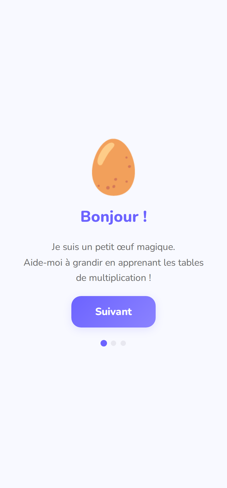
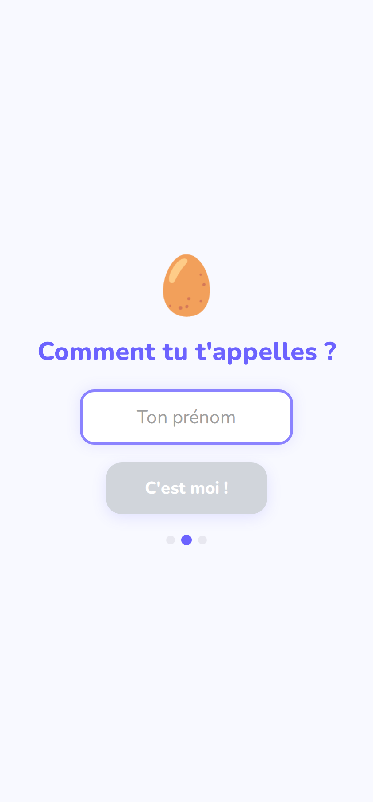
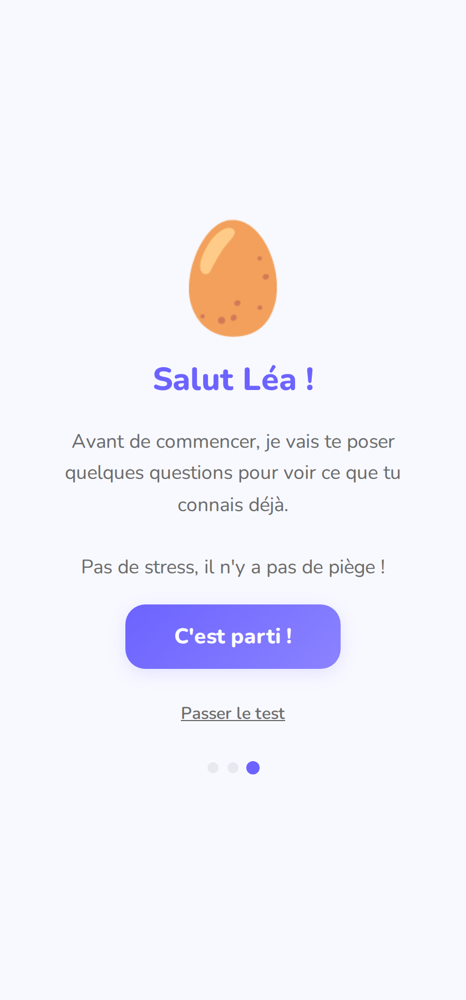
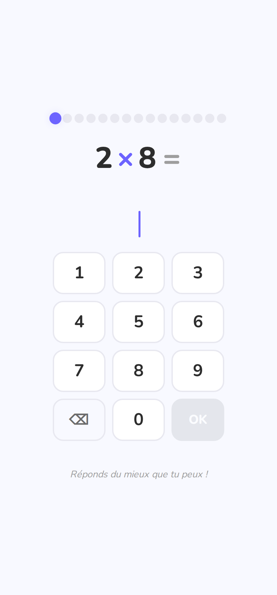
Écran d'accueil
Le hub quotidien. La mascotte évolue au fil des progrès (œuf → bébé poussin → poussin → chouette → aigle). La flamme affiche la série en cours. Le gros bouton lance la séance du jour, et la barre du bas donne accès aux progrès, aux badges et aux règles ×1 / ×10. L'icône engrenage (appui long de 1,5 s) ouvre l'espace parent.
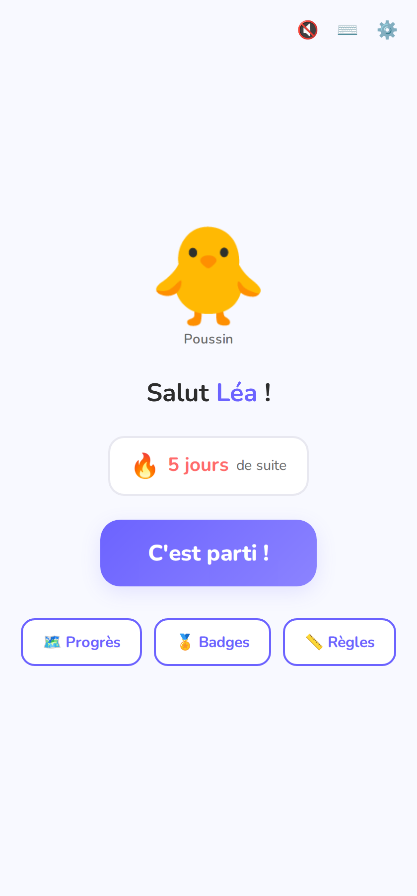
La séance
Une séance contient 12 à 15 questions. Quand un fait nouveau apparaît, il est introduit en trois temps : une grille de points qui montre la multiplication comme une addition répétée, la propriété de commutativité (3×5 = 5×3, sauf pour les carrés), et une astuce de dérivation adaptée au fait (par exemple « × 9 = × 10 moins une fois »). Ensuite viennent les questions. Une bonne réponse rapide donne une étoile dorée. En cas d'erreur, la bonne réponse est affichée avec la grille de points et — tant que le fait est en début d'apprentissage — l'astuce de dérivation est rappelée. Le fait est re-posé un peu plus loin dans la séance.
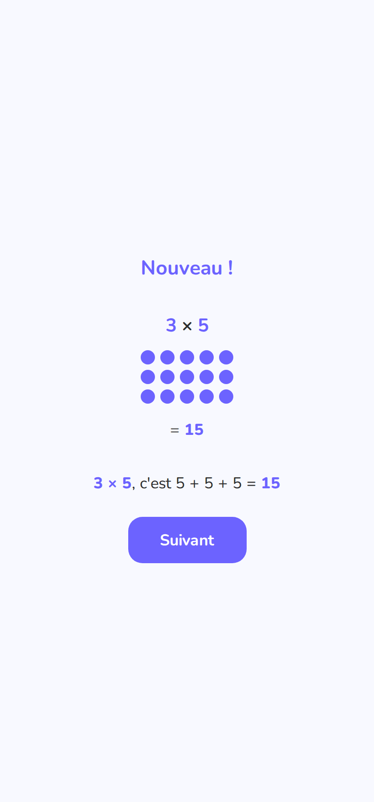
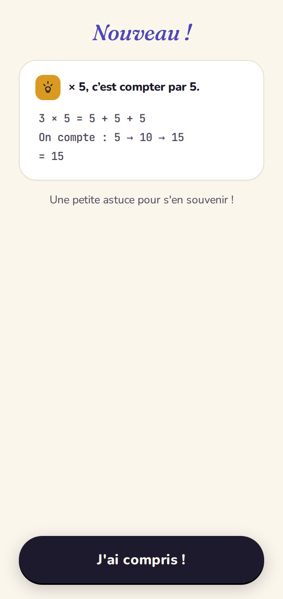
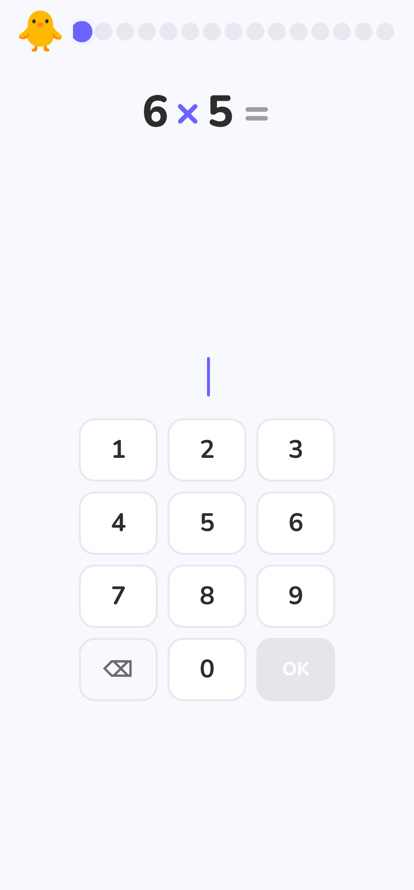
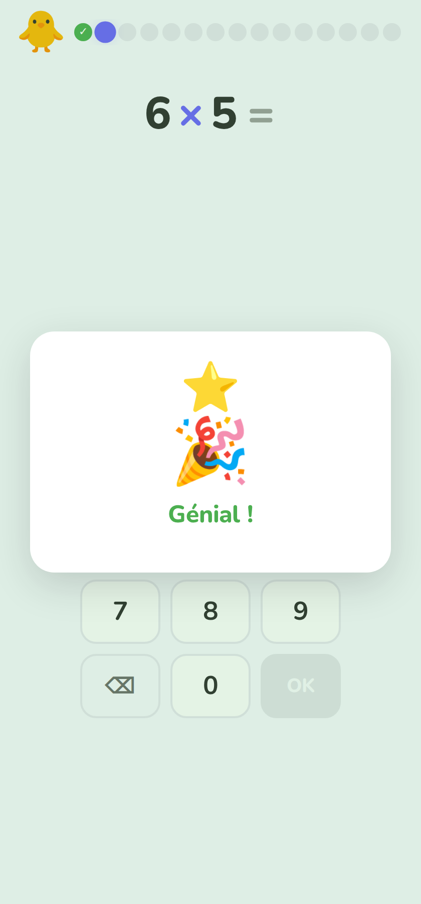
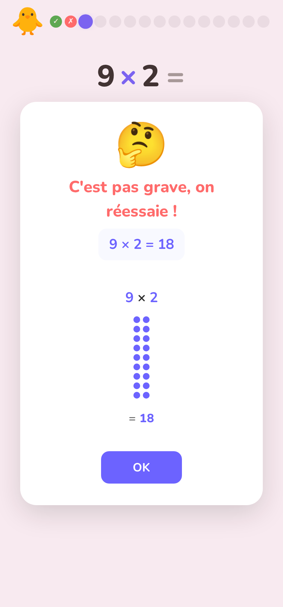
Bilan de séance
À la fin d'une séance, l'écran de bilan récapitule les faits nouveaux, les progrès réalisés, et déclenche les confettis s'il y a eu une montée de niveau de la mascotte, une table entièrement maîtrisée ou un nouveau badge. La progression globale est affichée via une barre « X faits connus sur 36 ».
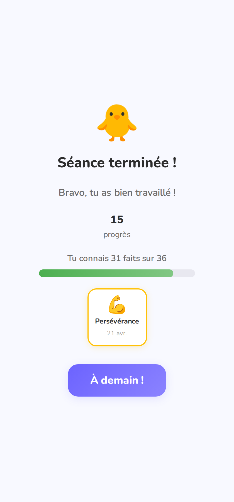
Ma carte au trésor
Une grille interactive montre chaque fait (a×b) coloré selon sa boîte Leitner : gris (pas encore vu), rouge, orange, jaune, vert clair, puis vert foncé (maîtrisé). Les totaux « découverts / maîtrisés / total » sont affichés en haut.
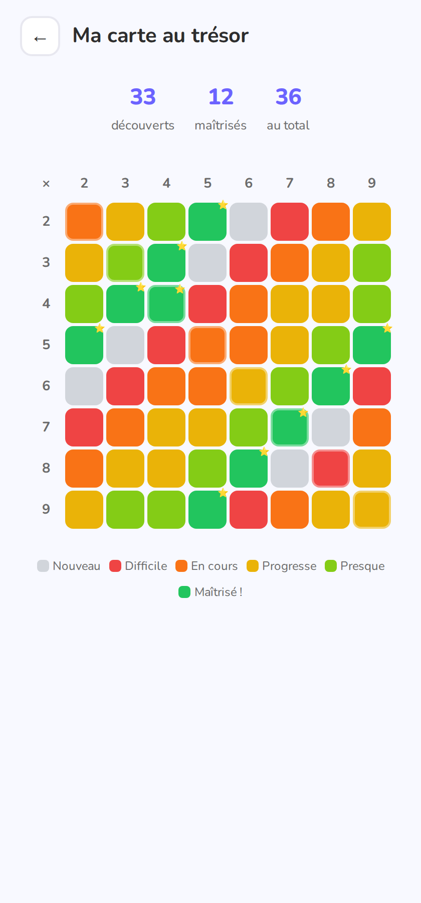
Les badges
18 badges au total, répartis en trois familles : jalons (première séance, 7 jours, 30 jours), performance (10 réponses de suite, 5 réponses < 2 s), et maîtrise (un badge par table + un badge « génie des maths » quand tout est en boîte 5).
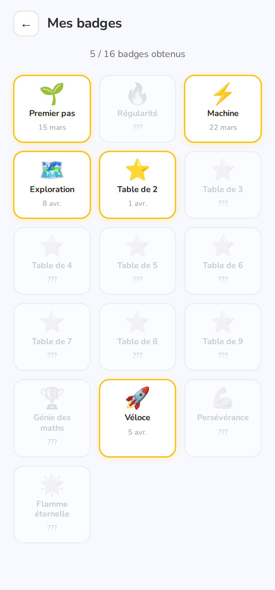
Les règles ×1 et ×10
Deux règles que l'app met en avant dès le début pour alléger la charge mnésique : multiplier par 1 (le nombre ne change pas) et multiplier par 10 (les chiffres glissent d'une place vers la gauche, un 0 prend la place des unités). Ces tables ne font donc pas partie des 36 faits appris.
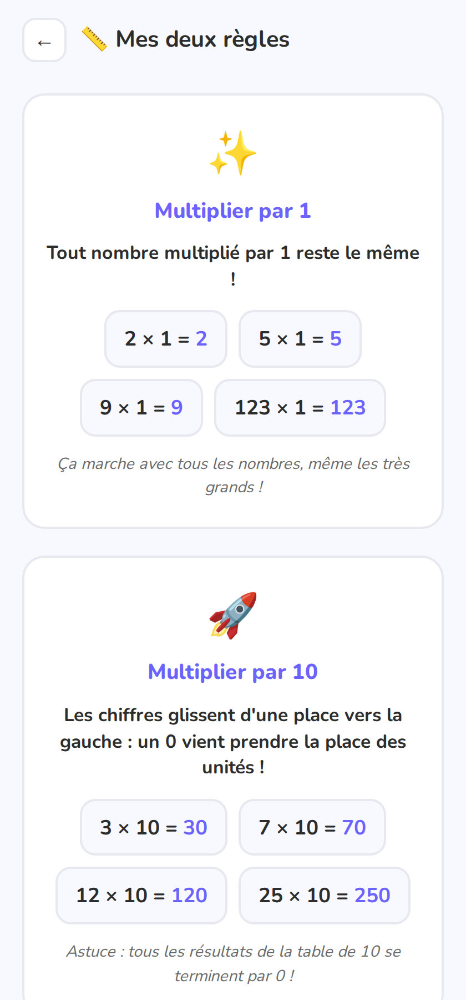
Espace parent
Accessible depuis l'accueil par un appui long sur l'engrenage (1,5 s). On y retrouve : les statistiques générales, un histogramme des boîtes Leitner, l'évolution du taux de réussite, les faits les plus difficiles (avec possibilité de les réinitialiser), les temps de réponse moyens par table, l'historique des 10 dernières séances, et les actions export / import du profil (JSON).
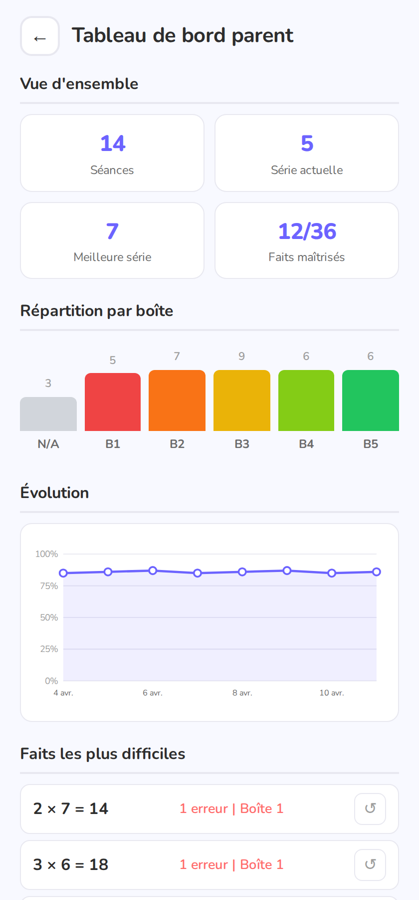